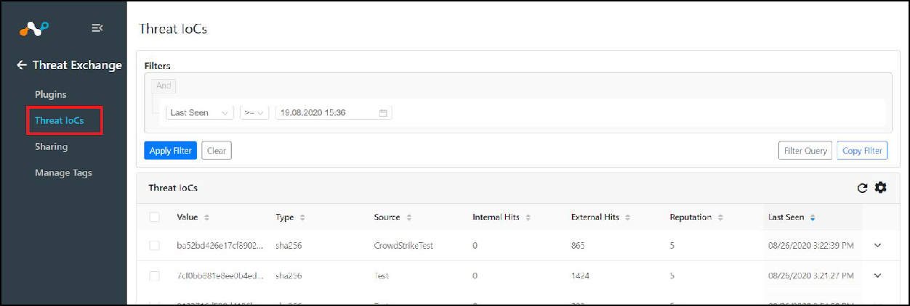
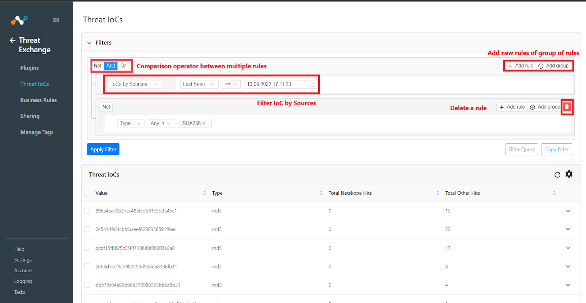
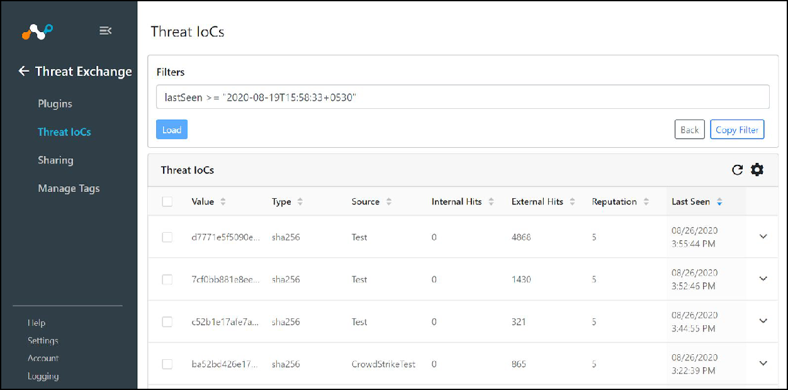

List IoCs and Use Filter Options
Both Admins and Users can list IoCs. Threat Exchange maintains the database of IoCs provided from all configured plugins. You can view all available IoCs, view the metadata for each, and filter IoCs.
Go to Threat IOCs from the left nav panel.
 The list of all active IoC will appear. The first time you see this screen, the default view will present IoCs added or updated (via API) in the last 7 days. More will be pulled from the database of active IoCs, depending on the filtered query. The IoCs list is paginated with a default page size of 10 records that can be increased to show up to 100 records. By default, records are sorted in descending order of Last Seen.
There are different filter options available based on the metadata that is or can be associated with each IoC. You can add one or more filters and can add a group of filters to dive into a subset of all the active IoCs. The detailed list of filter options and field meanings is presented below. You can also select Not for a negative filter criterion.
Field
Filter String Variable
Description
Filter Operators
Value
value
IoC value - MD5 SHA256 for file hash or URL.
Is equal and contains (Regex also supported).
Source
source
Plugin configuration sourcing IoC.
Is equal and contains (Regex also supported).
Comments
comments
Comments provided for that IoC.
Is equal and contains (Regex also supported).
Type
type
Type of the IoC. MD5, SHA256, URL
any in, not in operator (Multiselect)
Reputation
reputation
Confidence of the information. Low 1 - High 10.
!=, <, <=, >, >=
Internal Hits
internalHits
Number of times Netskope has seen this IoC.
Filter operators
External Hits
externalHits
Number of times third parties have seen this IoC.
!=, <, <=, >, >=
Test
test
Boolean value whether IoC is marked as Test from Netskope (a metadata field value used for testing).
Is equal, !=
Active
active
Boolean value whether IoC is expired or not.
Is equal, !=
Safe
safe
Boolean value whether IoC is safe or not. (Metadata field value used to denote a non-malicious IoC for the Github DLP plugin).
Is equal, !=
Shared With
sharedWith
List of plugin configurations where IoC was pushed.
any in, not in operator (Multiselect)
Tags
tags
Tags associated with the IoC data.
any in, not in operator (Multiselect)
Expires At
expiresAt
Time at which the IoC becomes inactive.
!=, <, >, >=
First Seen
firstSeen
Time when TE first saw IoC from a plug-in.
!=, <, >, >=
Last Seen
lastSeen
Time when TE last saw IoC from a plug-in.
!=, <, >, >=
For more than one filter criteria, move the mouse to the upper right of the filter box to see and select the Add Rule option. Then select the appropriate comparison operator, like And or Or by moving the mouse over the Not button in the upper left. The other options will then be shown.
For alternative multi-data criteria, select Add Group. Rules will be processed from top to bottom. Move the mouse to the upper right of the filter box to see the Add Group option.
After selecting the desired filter, click Apply Filter. IoCs matching the filtering criteria will be listed in the UI.
Click on the Clear option to remove an applied filter; the UI will fall back to the default filter and IoCs matching the default filter will be listed as the screen refreshes.
 You can also copy the filter string created in the rules engine after applying the filter. Select Copy Filter to copy the actual search string. The copied string can be used as a filter in any plugin configuration to limit the data Threat Exchange will send to the plugin.
Another option is to enter the filter query manually, and then load the filters according to the query.
